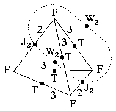
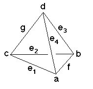

195
195
 197
197 Orbifold Atlas Home Page
Orbifold Atlas Home Page
 Crystallographic Topology Home Page
Crystallographic Topology Home Page
Underlying Topological Space: S3; Figure Pseudo-Symmetry (FPS): 222
Euclidean 3-Orbifold with Invariant-Lattice-Complex Letters
(left), Wyckoff Site Letters (right)
 
| FPS | Mult | Lattice Comp | Group Graph | Wyckoff Set | 2[4]Cover |
| 4-4 | F | 332 | a, b, c, d | ||
| 16-4 | F4[T]F4 | 32<3>32 | (e1:a-c, e2:c-b, e3:b-d, e4:d-a)1 | ||
| 24-2 | F6[J2]F6 | 33<2>33 | f:(a-b)2, (g:c-d)3 | ||
| 48 | 1 | h:efg | |||
| 2 | 48-2 | J22[W2]J22 | 2*=22<1>22 | (h1:f-g)4, (h2:f-g)5 | #195(g,h) |
| 48-4 | F12[-]J22 | 2*=332<1>22 | h3:a-g, h4:b-g, h5:c-f, h6:d-f | #209(g,h) | |
| 2,2 | 48-4 | T3[W2]T3 | 2*=33<1>33 | h 7:e1-e3, h8:e2-e4, h9:e3-e1, h10:e4-e2 | #210(g) |
| 48-2 | m* | (h11:gh1)6, (h12:fh1)7 | #202(h) | ||
| 48-4 | m* | (h13:efg)8 | #216(h) | ||
| Struct-Mult | Critical Points | Heegaard Surf | Wyckoff Cut |
| ZnS -2s | FF/T/T/FF | H3232{11} | e4 g e2 f; g e3 f e1 |
| NaCl-1s | FF/J2/J2/FF | H3333{1} | e1 e2 e3 e4 |
| FCC -4 | FFF/TT/J2/F | H33222{11} | e1 e2 g(f1)(f2); (etc. x4) |
Lattice Points: (1) 0,0,0 + (1/8,1/8,1/8) x8 &; (2) 0,0,0 + (1/4,0,0) x2; (3) -1/4,1/4,1/4 + (1/4,0,0) x2; (4) 1/4,0,0 + (0,1/8,0) x2; (5) 0,0,1/4 + (0,1/8,0) x2; (6) 0,y,z; (7) 1/4,y,z; (8) x,x,z
195
197
Orbifold Atlas Home Page
Crystallographic Topology Home Page
Page last revised: